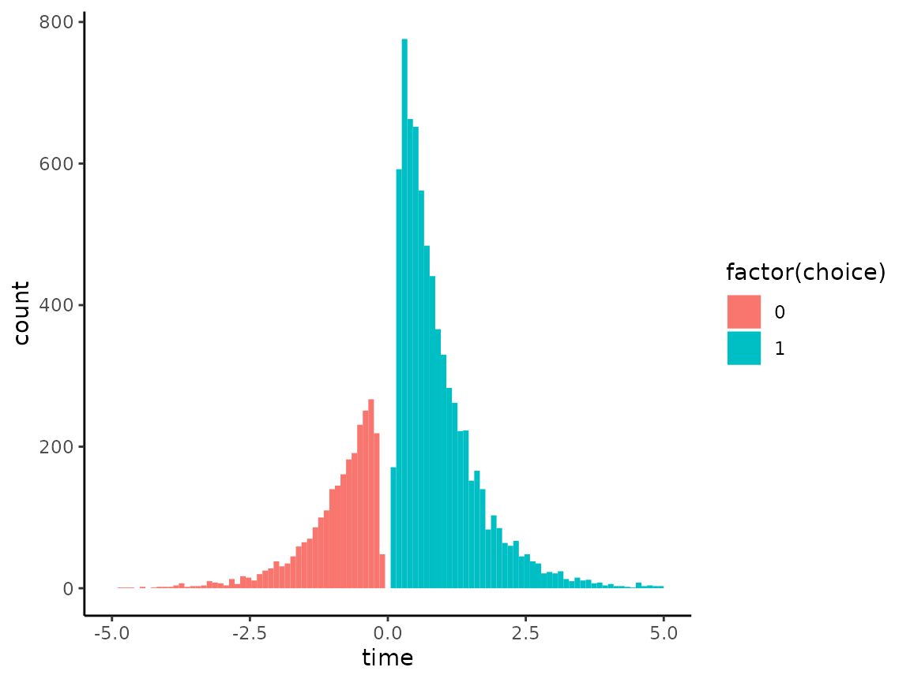

demo.RmdHere, we draw 10000 samples from a drift diffusion model with relative starting point \(b = 0.5\), inter-barrier distance \(a = 2\), and drift rate of \(v = 0.5\). In this model, we assume a non-decision time period of 0.
ddm_sims <- simulate_ddm(10000, b = 0.5, a = 2, v = 0.5)Here, a histogram of response times for each choice. In typical style, we plot the times corresponding to choices of 0 using negative times.
ddm_sims %>%
mutate(time = if_else(choice == 1, time, -time)) %>%
ggplot(aes(x = time, fill = factor(choice))) +
geom_histogram(bins = 100, position = 'identity') +
xlim(-5, 5) +
theme_classic()
The bivariate density of any given response time and either one of the two alternative choices, given values for \(b\), \(a\), and \(v\), i.e. \[
\mathrm{P}(t, x \vert b, a, v)
\] is calculated with time_choice_density. For example, the probability density of a response time of \(2.5\) and choice of \(1\) given the above parameter values is
time_choice_density(t = 2.5, b = 0.5, a = 2, v = 0.5, choice = 1)
#> [1] 0.04335575On the other hand, the probability density of a response time of \(1.5\) and choice of \(0\) given the above parameter values is
time_choice_density(t = 1.5, b = 0.5, a = 2, v = 0.5, choice = 0)
#> [1] 0.06206238